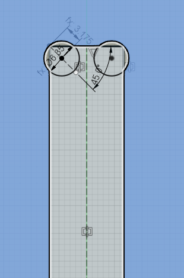

2D Computer Controlled Machining
For this week, we were introduced to the big CNC Machine. We were brought to the FabLab at T11, where our lecturer, Mr Chew introduced us to the machine.
{kind=link}
Before we started, he went through the process and safety of turning on the actual machine, though it is important for atleast the lab tech or Mr Chew himself to be there for us to be able to use the machine to cut out anything. For starters, we always have to put on safety goggles while cutting, ensure that there are no hanging accessories on us and all those good stuffs. Next we have to check if the emergency reset button on the manual handtool is not pressed. This is to make sure that the router can be turned on.
{kind=link}
We then have to turn on the vacuum pump/dust collector which is very important when doing the cut.
{kind=link}
After all that is done, he went ahead and showed us a demo of him cutting out a simple design that he made.

Assignment
For the assignment, we were tasked to design something big so that we are able to cut using the CNC machine with wood thickness of 12 to 15mm. So for me, I decided to do something simple which was already demonstrated in class, which was to make a chair, i followed an example which was posted by the Fusion team themselves. Here is how it went.
Designing
So as every other designing process, we first have to create a new component. So like the video, i first created the top seat component and created my own design. In the video, they created a circle topside but for mine i desided to make it square with rounded off edges. The measurements are as shown below. I then extruded it by the thickness of 12mm.(wrong thickness in image)
{kind=link}
I then moved on and created a new component for the leg piece. as shown below. It is pretty straight forward and the video pretty much covers in more detail in terms of the designing aspect and how to duplicate the legs. Once that is done, i then again extruded by thickness of 12mm. The end product should more or less look as such.
{kind=link}
{kind=link}
Once done with the design, we have to also importantly add dogbones for right any right angle cuts as the rotary bits for the cnc machine will not cope well at right angle cuts. After doing that, we can finally lay our designs out flat to produce our Gcode.
{kind=link}
{kind=link}
{kind=link}
Once that is done,